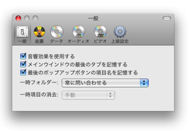
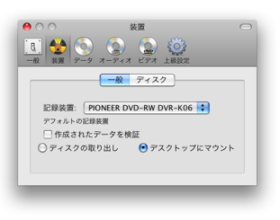
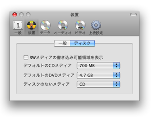
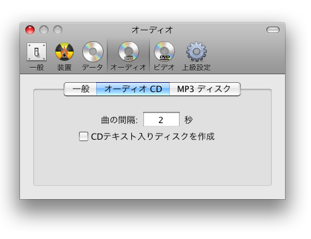
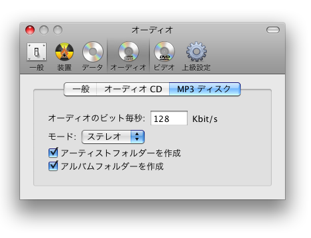
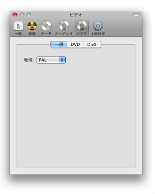
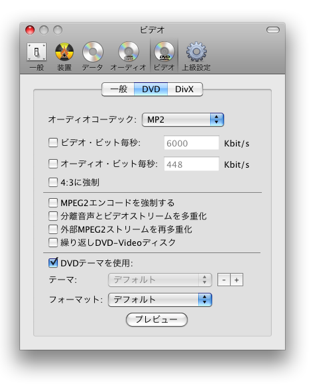
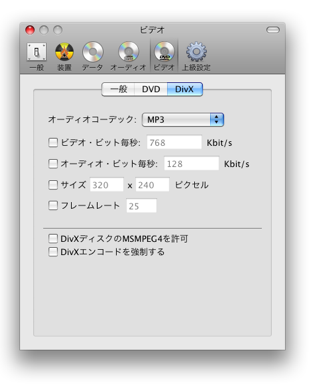
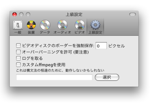

環境設定
Burnではたくさんの設定ができます。 ここで説明します。
一般:

Burnのインターフェースに関する一般的な設定。一時ファイルの設定とそれらの取扱方法。
作成装置:

デフォルトの作成装置と作成後の挙動設定

最初の設定はBurnのウインドウにおいて上書き可能な領域を表示します。最後のオプションは作成装置にディスクが無いときのデフォルト設定です。
データ:

Burnが最後のポップアップボタン(一般)を記憶していないときの、デフォルトのデータフォーマットを設定できます。ファイルとして取り扱われるファイルパッケージを、Burnがどのようにそれらを表示するかの設定ができます。またサイズ表示に関するオプションを設定できます。最後のオプションは最もプロセッサーを酷使します。
オーディオ:

Burnが最後のポップアップボタン(一般)を記憶していないときの、デフォルトのオーディオフォーマットを設定できます。

オーディオディスクのための設定。プレギャップはオーディオトラック開始の前の秒数です。CDテキストがディスクに追加されます。CDプレーヤーの中にはトラックについての情報(アーティストやアルバムなど)を取得できるものがあります。作成装置によってサポートされなければなりません。

MP3ディスクのための設定。オーディオのビット毎秒は使用される1秒当りのキロビット数です。より多くの値は、より多くのファイルサイズを必要としますが、より高品質になります。Burnはまた、MP3ディスクにフォルダーを作ることができます。
ビデオ:

Burnが最後のポップアップボタン(一般)を記憶していないときの、デフォルトのビデオフォーマットを設定できます。またここでリージョンを設定できます。

DVDタブは品質、サイズ、オーディオフォーマットの設定オプションを持っています。また、DVDビデオディスクを作成するときに有益な上級オプションもあります。最後のセクションはテーマと標準フォーマット(4:3)かワイドフォーマット(16:9)かの選択です。

Divxタブは品質、サイズ、オーディオフォーマットの設定オプションです。総てのDivXプレーヤーで動作するとは限らないMSMPEG4を、有効にすることができます。Divx aviファイルを変換する為にエンコーディングを強制することができます。
上級設定:

ボーダーを強制保存すると、ビデオのあまりに多くをズームさせるデバイスでビデオを表示するのを助けるボーダーを作成します。このオプションはまだアスペクト比を計算しないので、完全には機能しません。オーバーバーニングを許可するとバーニングが頻繁なときの警告を削除します。確実に、すべての作成装置がそれを扱うことができるかどうかということでないので、慎重にこのオプションを使用してください。ログは、Burnに関する問題を見つけるのに大部分使用されます。Burnは、ビデオとオーディオファイルを変換するのにffmpegを使用します。あなたは、あなた自身のカスタマイズされたバージョンを使用することを選ぶことができますが、それは動作しないかもしれません。